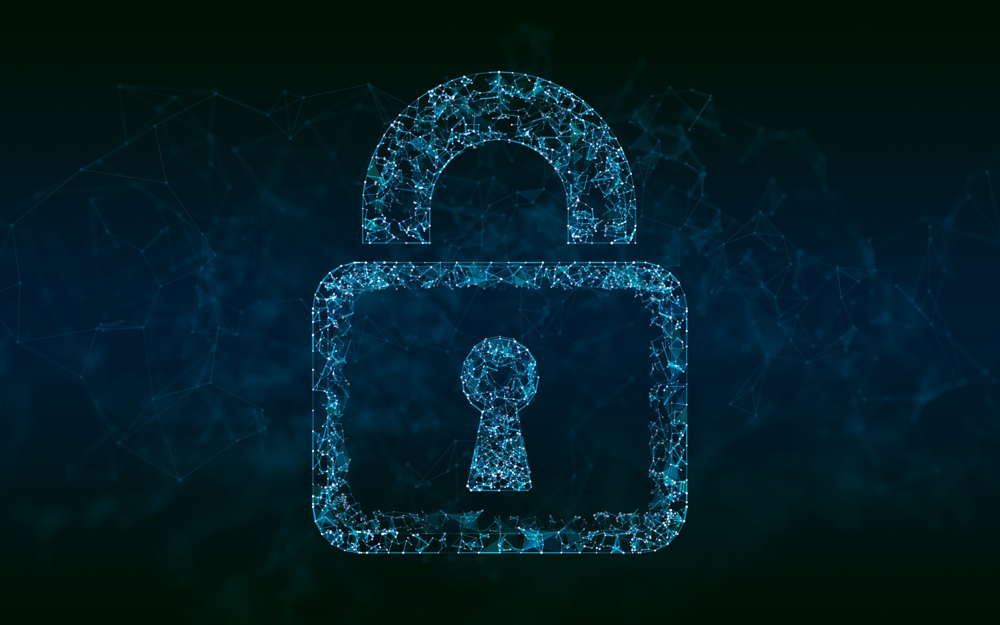
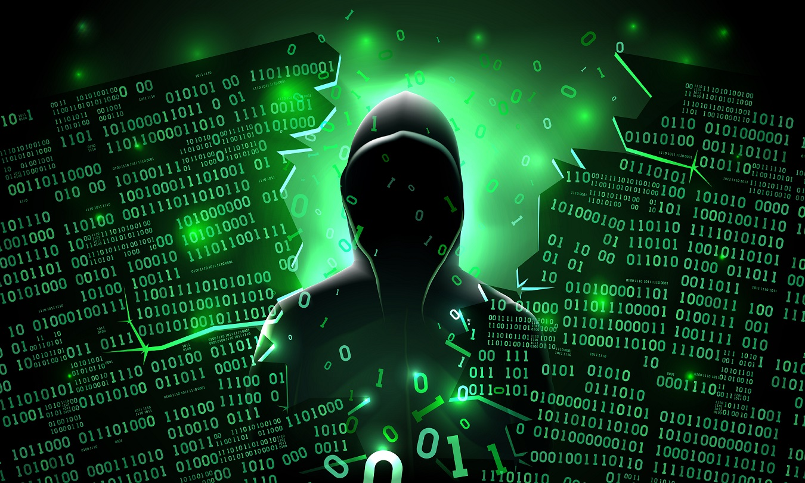
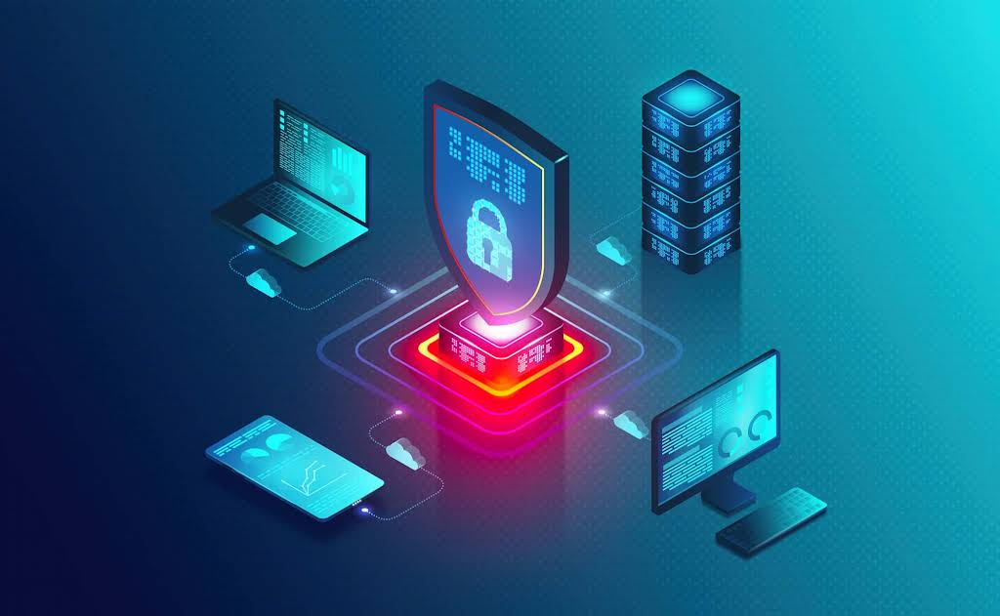

Zaštita lozinki i naloga
Jedan od najvažnijih načina zaštite na internetu jeste korišćenje sigurnih i jakih lozinki. Lozinka bi trebalo da bude dovoljno duga, da sadrži kombinaciju velikih i malih slova, brojeva i specijalnih znakova. Takođe, važno je koristiti različite lozinke za različite naloge, kako bi se sprečilo da napadač pristupi svim nalozima ako sazna jednu lozinku. Dodatnu zaštitu pruža dvostruka autentifikacija, koja zahteva još jedan način potvrde identiteta, na primer kod koji stiže na telefon. Na ovaj način možemo značajno smanjiti mogućnost neovlašćenog pristupa našim nalozima.

Phishing i sumnjive poruke
Phishing je jedna od najčešćih internet prevara. Kod ove vrste napada, prevaranti pokušavaju da navedu korisnika da otkrije svoje lične podatke, lozinke ili podatke o platnim karticama. Poruke često izgledaju kao da dolaze od banke, društvenih mreža, škole ili neke poznate kompanije. Mogu sadržati poruke koje stvaraju osećaj hitnosti, kao što su upozorenja da će nalog biti zaključan ukoliko odmah ne kliknemo na određeni link. Zato je važno pažljivo proveriti adresu pošiljaoca, ne otvarati sumnjive linkove i ne unositi svoje podatke na nepoznatim sajtovima.

Zaštita uređaja i ličnih podataka
Zaštita računara i telefona je veoma važna jer na njima čuvamo veliki broj privatnih informacija. Uređaje treba redovno ažurirati, jer ažuriranja često sadrže bezbednosne popravke koje štite od novih pretnji. Takođe je korisno koristiti pouzdane antivirusne programe i izbegavati preuzimanje fajlova i aplikacija sa nepoznatih izvora. Posebnu pažnju treba obratiti na lične podatke, kao što su adresa, broj telefona, fotografije i podaci o karticama. Pažljivim ponašanjem, redovnim ažuriranjem i odgovornim deljenjem informacija možemo značajno smanjiti rizik od krađe podataka, malware-a i drugih cyber napada